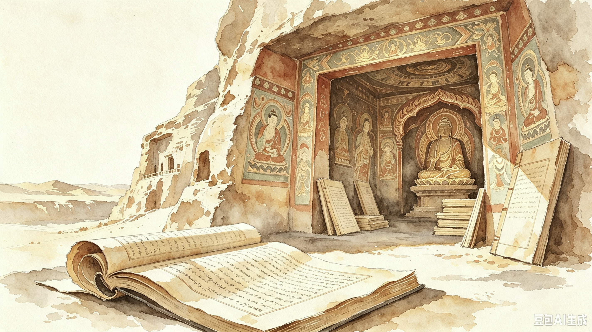

文物封藏
大量佛教经卷、社会文书、绘画、纺织品等放入洞窟，洞口封闭；具体日期与原因仍有争议。
了解更多 →
一窟封藏，百年流散，千年重逢
大量佛教经卷、社会文书、绘画、纺织品等放入洞窟，洞口封闭；具体日期与原因仍有争议。
了解更多 →清理洞内积尘时发现藏经洞，后向地方官员报告，并卷入文物转移与售出。
了解更多 →通过王圆箓与翻译蒋孝琬获得大量文物，主要流入英国和印度的博物馆、图书馆。
了解更多 →伯希和凭语言能力在烛光下挑选文书，带走数千件，并推动余卷运往北京。
了解更多 →大谷探险队、鄂登堡考察团与华纳等先后到来，记录和带走文书、画作、壁画碎片与雕塑。
了解更多 →敦煌艺术研究所成立，开始系统保护、调查、临摹、编号和记录，成为敦煌研究院的前身。
了解更多 →国际跨学科研究与数字化、摄影、数据库发展，使分散的文物和信息重新建立关联。
了解更多 →历史并未停在文物的流散处。回到残片、文献与人的判断，让一段段被切断的联系重新可见。